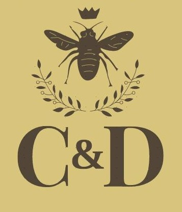
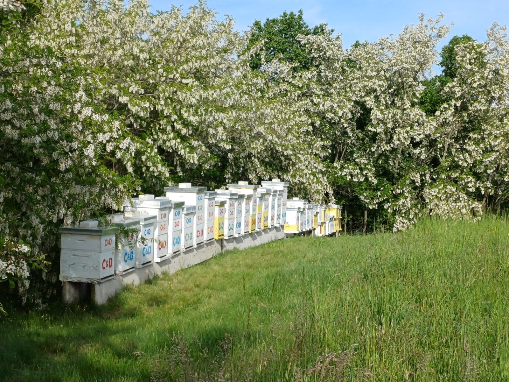
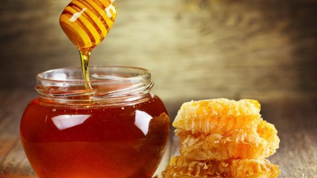

🐝 Pčelinjak Cala i Deja 🐝

Gajenje pčela
Na padinama i obroncima Župe, a u neposrednoj blizini Aleksandrovca, porodica Jovanović već treću godinu za redom čuva i gaji svoj pčelinjak. Uz veliku pomoć svoje supruge Slavice, Dejan Jovanović je ostvario svoju davnu želju da osnuje svoj pčelinjak. Od te 2021. godine njih dvoje gaje svoje vredne pčele koje im ljubav uzvraćaju svojim slatkim medom i zdravim produktima.

Proizvodnja meda
Sa šarenih cvetova župske okeanije pčele skupljaju dragoceni polen i pretvaraju ga u najkvalitetniji med. Kod nas možete pronaći ukusan bagremov, livadski i dobro poznati šumski med. Šta čekate? Pozovite i poručite svoju zdravu kašičicu slatkoće još danas!